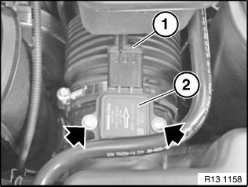
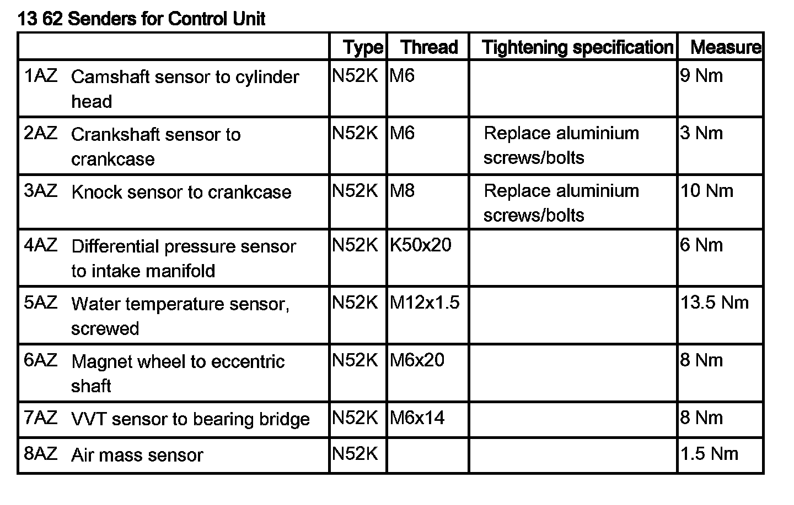
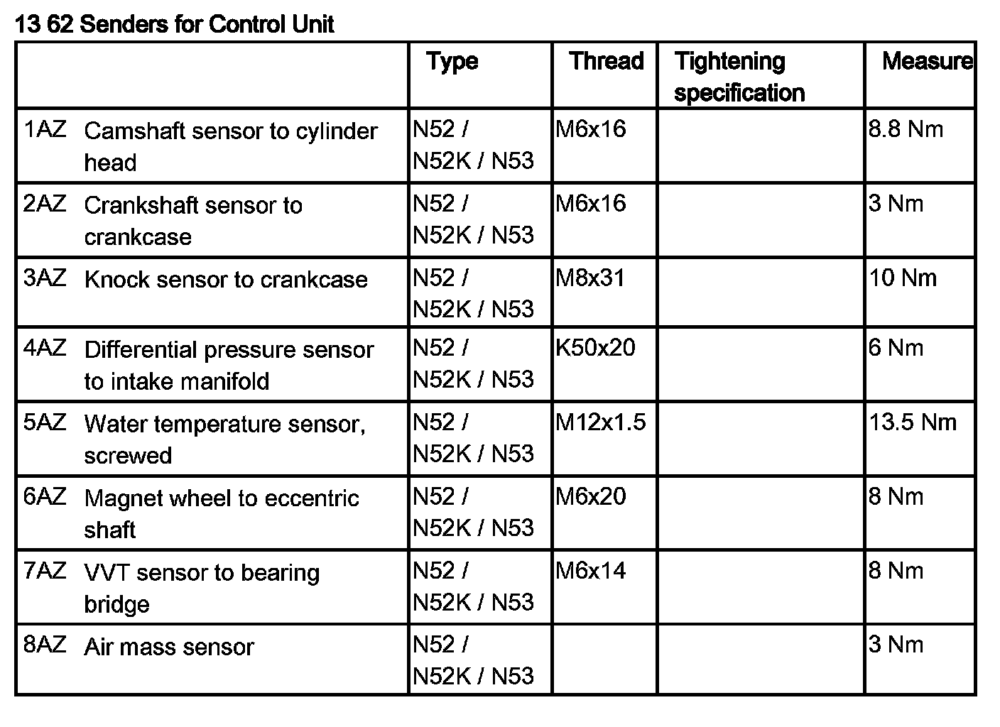
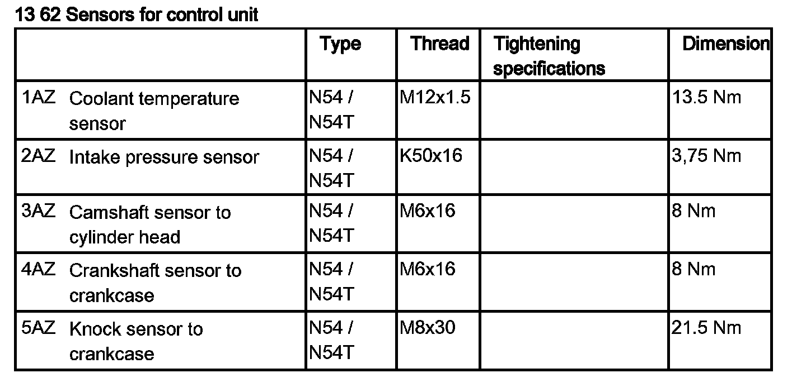

Air Flow Meter/Sensor: Service and Repair
13 62 560 Removing And Installing/Replacing Air-mass Flow Sensor (N52 / N52K / N53)

Necessary preliminary tasks:
- Read out fault memory of DME control unit
- Turn off ignition

Release screws.
Unlock plug (1) and remove.
Pull air-mass flow sensor (2) out of upper section of intake filter housing.
Installation:
Screws - tightening torque 13 62 8AZ

NOTE:
Check stored fault message.
Delete fault memory.


